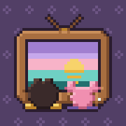
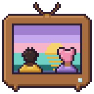
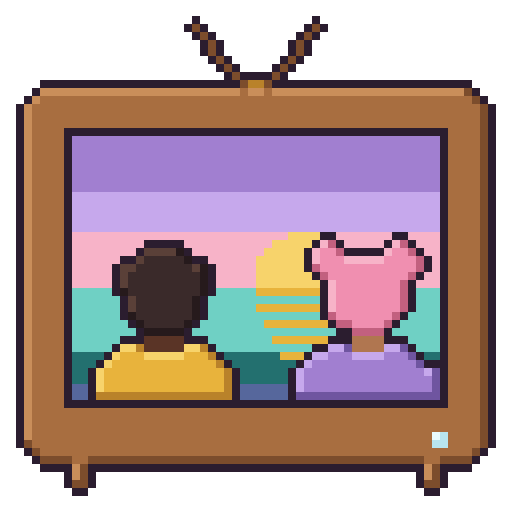
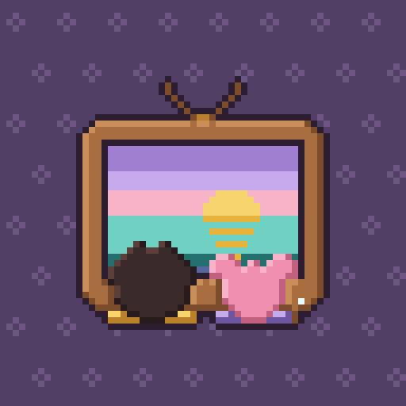

Site icons: the wood-TV mark, drawn per size (never shrunk from a big one)



Tabs: light and dark browser chrome (the tab icon is the 16 px file at 1×; the 2× shot uses the 32 px file)
Maskable 512 under the launcher masks (shown at 128 px); dashed ring = the 40% safe zone

Left to right: safe zone, circle, squircle, teardrop, the tightest (80%) circle crop, and the apple-touch icon under the iOS corner radius.